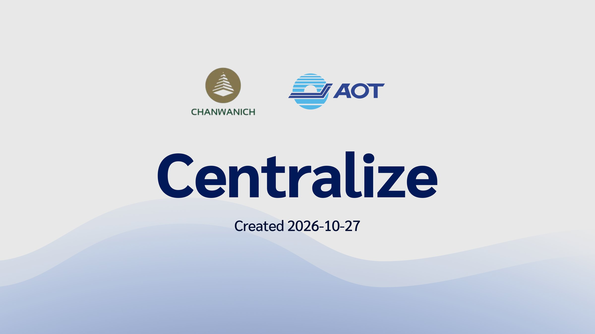
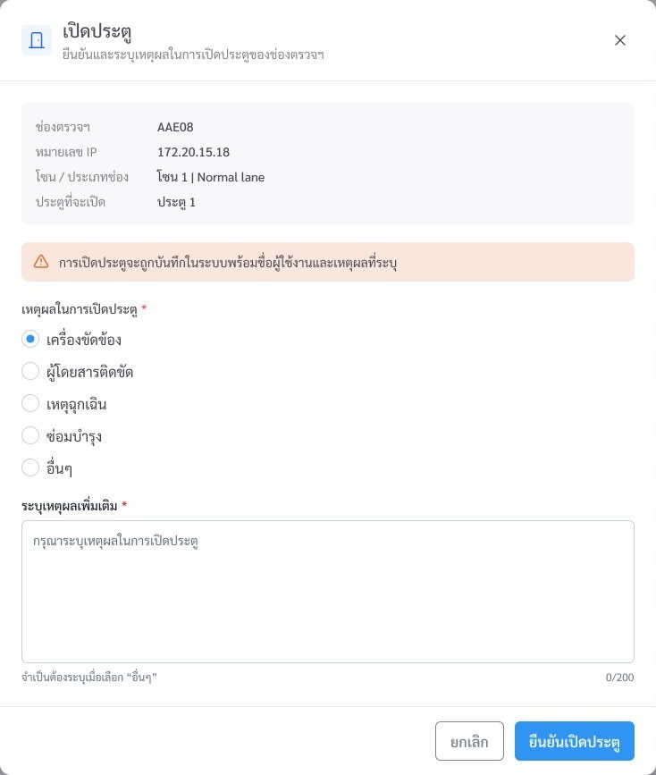
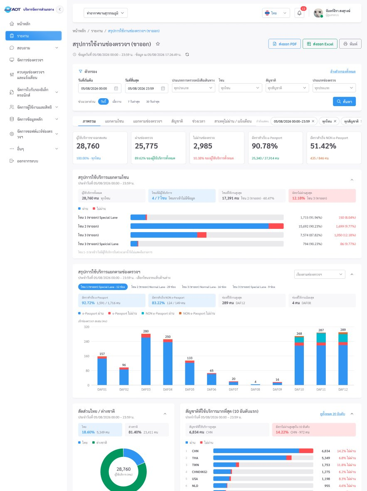
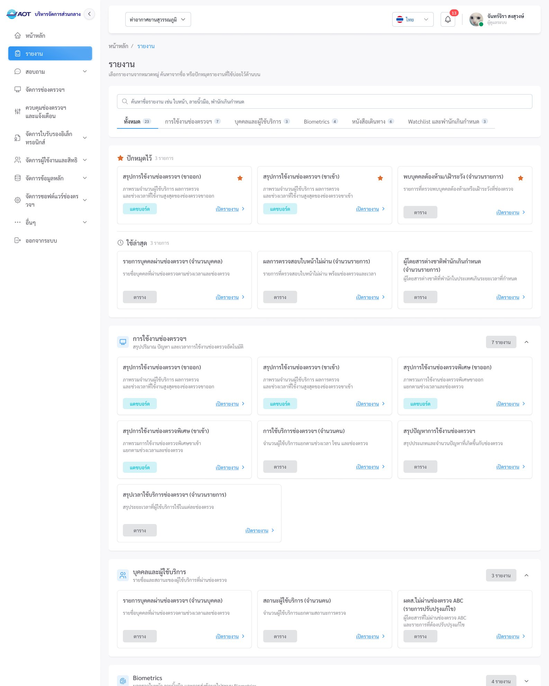
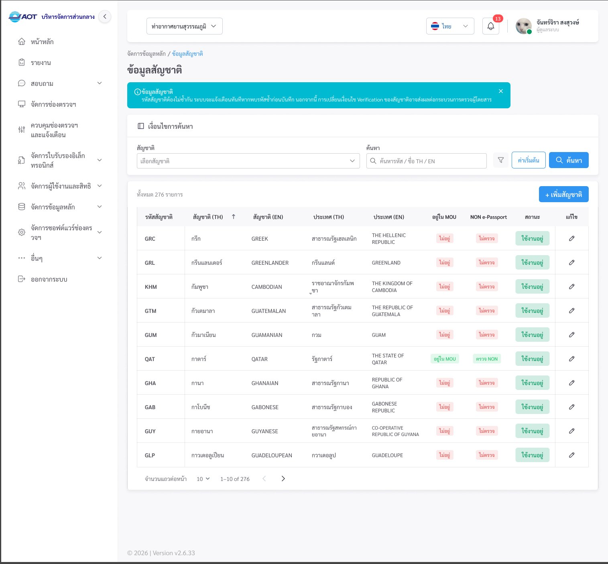

10modules reviewed
10heuristics as the checklist
6user groups mapped
9root problems found
Redesign of the back-office tool airport and immigration staff use to monitor and control automated passport gates.

Next I mapped the existing menu tree and traced each finding back to it. Most screen-level issues came from the same nine causes, so those nine became the brief.
| Root problem | What it costs staff |
|---|---|
| Menus follow modules, not tasks | Hard to find a function. Long time to learn the system. |
| No clear workflow | Staff must already know which menu, which button, and where to go next. |
| Lots of data, no priority | Reading whole tables to find the one thing that matters. |
| Too many filters and search fields | Searching and checking take longer than the task itself. |
| Inconsistent UI | The same interaction is relearned in every module. |
| View and edit look the same | Unsure whether a detail page is read-only or a form. |
| Permissions ticked one by one | Long lists that are hard to review before saving. |
| Technical menu names | New staff learn the vocabulary before they can learn the job. |
| Features keep piling up | Every request added another menu, pattern, modal, filter or master-data list. |


Findings 03 and 04 in practice. The overview now answers three questions in order: are the connected systems up, how many gates need attention, and which ones.


Staff open a gate to answer one question: why did this passenger fail, and what do I do now? The result of the passenger flow now comes first.


Opening a gate lets a passenger through without a full check. Changing the connected systems changes every check at the airport. Both now stop for a moment. The second also fixes finding 02.


The 24 report pages and the master-data lists were rebuilt on a few shared templates. The same report, before and after:



Gates reject passports when a country certificate expires, so expiry is the first thing staff need to see.


Built so the fixes above stay fixed in every module.
Sarabun for Thai and English UI. IBM Plex Mono for IDs, IPs, counts and timestamps.
Success, warning, error and info scales, each tied to one status meaning.
Gate card, device row, score meter, timeline, upload, stepper, table, chart, modal.